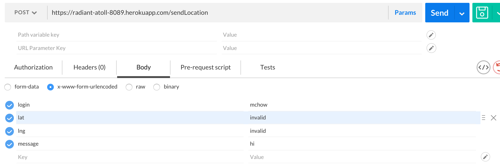
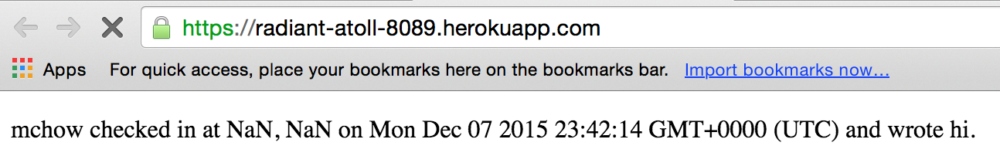

Security and Privacy Assessment of Client-Side and Server-Side
By: Erica Schwartz
12/8/2015
Introduction
For this assignment, I was tasked with finding at least three security vulnerabilities in Julie Sanduski's implementation of the client and server sides of the Mapchat webapp (Assignments 2 and 3). The specifications that Julie was working with for these assignments are as follows:
- For the client side (Assignment 2):
- 'Retrieves your current location and sends your current location with a message to a datastore'
- 'Retrieves and displays the locations and messages of people on the map'
- For the server side (Assignment 3):
- POST /sendLocation API
When sent a valid login, lat, lng, and message, adds an entry into the database and returns a JSON string that is an array of the items in the database.
- GET /latest.json API
'Returns the last known location of a login as a JSON string of a single object.'
- GET / API
Displays a 'list of the check-ins and messages for all logins sorted in descending order by timestamp' as a webpage.
Although Julie's web app is functional, it does contain a few security vulnerabilities which must be fixed. I have enumerated and described them in the following document, and have also described how these vulnerabilities may be removed, in order to strengthen the security of this webapp. By 'vulnerabilities,' I mean a features in the webapp that allow malicious users to deface the page, harm the datastore, or gain access to private information. I have found examples of each of these things in this webapp.
Methodology
I started this project by sending requests to Julie's server. To do this, I used Postman. Through this process, I found a few vulnerabilities in Julie's server. I uncovered style and code injection vulnerabilities, got the server to accept invalid latitudes and longitudes, and found a way for users to be returned other users' latest.json data. Then, I exchanged mapchat code with Julie, as well as having her add me as a collaborator to her heroku repository. This allowed me to look through her code, to get a better idea of what some of the potential vulnerabilities might be, and to see why the vulnerabilities I found exist and how to fix them. Then, I thought and consulted TA's about what other vulnerabilities may exist, and I realized that filling the database could be a vulnerability. I wrote some JavaScript code that sends lots of requests to the server to see if, theoretically, a malicious person could do this to fill the database's capacity.
Abstract of Findings
The first security issue I identified is a vulnerability to the injection of JavaScript code into the page "https://radiant-atoll-8089.herokuapp.com/". This would allow malicious users to run any code that they would like to run on page users' browsers. They could get access to the users' private information, execute code that harms their browsers, or redirect them to malicious sites.
The second security issue I have identified is a vulnerability to a client filling the database by posting many times to the server. When the database is full, it will no longer work because it cannot accept new data.
The third security issue I found has to deal with the database's vulnerability to accepting invalid entries. If the database accepts, for example, entries with a lat and lng of NaN, this could create bugs in clients' code which depends on the validity of these values.
The fourth security issue I identified is a vulnerability to the injection of style code into the page "https://radiant-atoll-8089.herokuapp.com/". This would allow malicious users to alter the appearance of the page, even making all contents of the page disappear.
The fifth security issue I have identified is a vulnerability to a client getting latest login information without a valid login, or for a login other than their own. This represents a larger vulnerability which is inherent to the specification of the server, that anyone can take on any username.
Issues Found
- Issue 1: Injection of JavaScript Code (Cross-Site Scripting)
- Location: index.js of Heroku server, GET '/' and POST '/sendLocation' API functions (errors in lack of sanitization from both functions combine to make this hack possible)
- Severity: High. This is because, as mentioned in the Abstract, cross-site scripting allows malicious users to run any code that they would like to run on the user's browser. They could get access to the user's private information, execute code that harms the browser, or redirect the user to a malicious site. The vulnerability is also very easy to find and to take advantage of. However, it is also very possible to protect against.
- A client can send the database code between script tags while making a POST '/sendLocation' request (as shown in the first screenshot), and the database will store it as is. This is the first problem, that the database is storing harmful data. Then, whenever a client makes a GET '/' request for the contents of the page, the page will run the injected JavaScript code. This is the second problem: that the GET '/' API returns all contents of the database without checking them first. As shown in the second screenshot, I was able to inject code for a redirection to the Double Rainbow video on YouTube: not a malicious site, although it easily could have been. I found this vulnerability through testing with Postman.
- Julie's code in the POST '/sendLocation' API function to get the message that she will store is currently:
var message = request.body.message;
And her code in the GET '/' API function to display the stored message is currently:
cursor[count]['message'];
She could resolve the code injection issue by using a complete sanitizer such as the one here, or, if she only wants to protect against attacks like this one, by replacing the POST 'sendLocation' API code with the following code (source):
var message = request.body.message.replace(/</gi, 'lessthan');
And the GET '/' API code with the following code:
cursor[count]['message'].replace(/</gi, 'lessthan');
- Issue 2: Filling the Database
- Location: index.js of Heroku server, POST '/sendLocation' API function
- Severity: Medium. This is because a full database will not actually do anything to harm the client, other than possibly taking away the web app's ability to function normally. However, it is damaging to the site, because it will break the site- no longer allowing it to store new data. The site administrators will either need to purchase more space for the database, or they will need to delete some of their data, which would take away the site's ability to return all logins, and could possibly throw away some important data. If a user sends requests in an infinite loop, the site administrators will be unable to increase their database size, or clean up their database, enough keep up with these requests, and the site will be broken.
- A client can write a simple infinite loop that sends post requests to the server. The code I wrote to test this (as shown in the first screenshot) is not an infinite loop, because I did not have time to allow the code to run for long enough to actually fill the database, and because I was worried that Mongo might charge Julie's credit card if I exceed her database's limit. However, I was able to successfully post 100 times to Julie's database. I confirmed this with both console logs (which I had print in the callback function when the database returned a ready state of 4 and a status code of 200), and by viewing the entries to the database in Postman. As the second screenshot shows, I was able to post many times to this database, even within the same second. It is not a stretch to say that if my for loop did not stop at 100 but rather stopped at a much higher number or continued indefinitely, I could easily fill Julie's database.
- In order to resolve this issue, Julie would need to somehow restrict posts to the database. It would not work to restrict posts by a given login, because a malicious user could easily just switch off logins (since all the logins are publicly available and are not password-protected). The only way to restrict post flow is to add a mandatory time delay for each post; this would just make the process of filling the database with posts slightly more difficult and time-consuming. Additionally, Julie would need to stop allowing database posts when the database was almost full (nearing the size limit of 500MB), if she did not want to risk being charged for additional space usage. Both of these actions would impact how functional her server is, and could make it depart from its contract. Finally, Julie would also want to add a check for messages that are too big; as one can imagine someone posting an enormous message theoretically filling the database. These methods would work as follows:
The code to insert a new entry into the database as it stands currently:
db.collection('checkins', function(error, collection) {
var id = collection.insert(toInsert, function(error, saved) {
if (error) {
response.send(500);
}
else {
db.collection('recentcheckins').update({'login':login}, {$set: toIn{upsert: true});
collection.find({}).sort({created_at:-1}).toArray(function(error, data){
response.send(data);
});
}
});
});
The edits I would add (I found the lengthInUtf8Bytes function here):
function sendresp(data) {
response.send(data);
}
function lengthInUtf8Bytes(str) {
var m = encodeURIComponent(str).match(/%[89ABab]/g);
return str.length + (m ? m.length : 0);
}
db.collection('checkins', function(error, collection) {
var dbsizeBytes = collection.dataSize();
var msgsizeBytes = lengthInUtf8Bytes(toInsert['message']);
// creates 499.9MB database size limit and .01MB message size limit
if (dbsizeBytes > 499900000 || msgsizeBytes > 10000) {
response.send(500);
} else {
var id = collection.insert(toInsert, function(error, saved) {
if (error) {
response.send(500);
}
else {
db.collection('recentcheckins').update({'login':login}, {$set: toIn{upsert: true});
collection.find({}).sort({created_at:-1}).toArray(function(error, data){
setTimeout(sendresp,3000,data); // creates 3 second delay
});
}
});
}
});
- Issue 3: Insertion of Invalid Data Into the Database
- Location: index.js of Heroku server, POST '/sendLocation' API function
- Severity: Low to Medium. This is because it does not harm the database or server, and will not actually do anything to harm the client other than giving them invalid data. However, a working server should stick to its contract and return what it says it is going to return, and this data vulnerability prevents the server from guaranteeing that it will always return valid numbers for a user's lat and lng.
- While making a POST '/sendLocation' request, a client can, (as shown in the screenshot), send a latitude and/or longitude that are not numbers (as in the first screenshot, where lat and lng were 'invalid' and 'invalid', respectively). The server will accept this data, and insert it into the database. This could create bugs in clients' code which depends on the validity of these values (client code displaying a login with invalid lat and lng is shown int the second screenshot.) I found this vulnerability through testing with Postman.


- Julie could fix this error by simply type checking lat and lng for validity before entering them into the database. Her current code for validating values before inserting them into the database is as follows:
if (message == null || login == null || lat == null || lng == null || checkin.indexOf(login) == -1){
response.send('{"error: Whoops, something is wrong with your data!"}');
}
She should make these changes to her code in order to prevent the insertion of invalid latitudes and longitudes:
var latnum = (lat < 0 || lat > 0 || lat == 0);
var lngnum = (lng < 0 || lng > 0 || lng == 0);
if (message == null || login == null || lat == null || !latnum || lng == null || !lngnum || checkin.indexOf(login) == -1){
response.send('{"error: Whoops, something is wrong with your data!"}');
}
- Issue 4: Injection of Style Code
- Location: index.js of Heroku server, GET '/' and POST '/sendLocation' API functions (errors in lack of sanitization from both functions combine to make this hack possible)
- Severity: Low to Medium. This is because while it could cause a GET '/' request to return a defaced page, it does not harm the database or server and will not actually do anything to harm the client other than not giving them what they asked for when the request is made from a web browser. Another problem with the client's ability to send style code to the database is that any other site that displays the results of the database will also be subject to that style code, unless they sanitize what the database returns. However, this is a relatively minor problem that is very possible to protect against.
- A client can send the database code between style tags while making a POST '/sendLocation' request (as shown in the first screenshot), and the database will store it as is. This is the first problem, that the database is storing harmful data. Then, whenever a client makes a GET '/' request for the contents of the page (as in the second screenshot), the entire page will be subject to that injected style code, which is, in this case, to not display anything. This is the second problem: that the GET '/' API returns all contents of the database without checking them first. This could obfuscate or remove the database's information from the page. I found this vulnerability through testing with Postman.
- The steps Julie could take to resolve this issue are the same as the ones that would resolve the first issue.
- Issue 5: Request Injection
- Location: index.js of Heroku server, GET '/latest.json' API function
- Severity: Low. This is because while it does allow the user to access to other users' information without any valid login (I used the login "foo" in the screenshot), the user could do this anyway via the GET '/' request method. The main vulnerability here is that the user has the ability to change the spec of what the server is returning; instead of returning the latest login for a user (or '{}', if the user has not logged in), it returns the login information for a user who has logged in other than the user in question. See here for more information on request injection. However, the bigger privacy vulnerability at hand here, which is inherent to the specification of the server, is that anyone can take on any username. This could allow a malicious user to impersonate someone else. This issue would be avoided by requiring people to log in to the site with a username and password.
- While making a GET '/latest.json' request, a client can, (as shown in the screenshot), make a query for login[$ne]=foo, where foo is any string. Normally, the program should only take queries of the form login=validlogin and otherwise return '{}'. However, as shown in the screenshot, this webpage responds to the request with a JSON object containing a different user's login. I found this vulnerability through testing with Postman.
- Through various console.log statements, I discovered that when I do a request injection, the request.query.login, as opposed to being some string such as "mchow", is an object: { '$ne': 'foo' }. Therefore, I realized that this problem can be fixed with a simple "if" statement that checks the type of the login.
Julie's code in the GET '/latest.json' API function to get the query is currently:
var login = request.query.login;
db.collection('recentcheckins', function(er, collection) {
collection.find({'login':login}).toArray(function(err, cursor) {
...
She could resolve the request injection issue by replacing it with the following code:
var login = request.query.login;
if (typeof(login) !== "string"){
response.send('{}');
} else {
db.collection('recentcheckins', function(er, collection) {
collection.find({'login':login}).toArray(function(err, cursor) {
...
Conclusion
This site must be insecure, by nature of the specification. For example, publishing people's locations for general public consumption is inherently a privacy vulnerability. However, there are ways to make this site slightly more secure, which I have outlined here. Additional future considerations include possibly implementing a username-password scheme in order to prevent users impersonating one another. On the whole, most of the bugs and vulnerabilities that I found would be relatively easy to fix. However, security is an ever-changing field, and there will always be a new vulnerability, and a new way to hack this site. The best we can do as the site administrators is to try to keep up, and try our best to protect our data and our site from the actions of malicious clients.